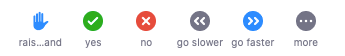

Visualization with R
UBC Library Research Commons
Pre workshop setup
- Install R
- Install R Studio
- Download R Markdown file
The Vancouver Campus is located on the traditional, ancestral, and unceded territory of the xʷməθkʷəy̓əm (Musqueam) people.
Map: https://native-land.ca/
Learning objectives
- Understand what visualizations R can produce
- Create basic graphs with the ggplot2 package
- Learn to add color themes and interactivity
Outline
| 0:05 | Setting the stage |
| 0:15 | Orientation to ggplot2 |
| 0:25 | Graph types: part 1 |
| 0:45 | Questions/practice/break |
| 0:50 | Graph types: part 2 |
| 1:15 | Themes and colors |
| 1:35 | Interactive graphs |
| 1:50 | Conclusion |
Participating online



Experienced in visualization
New to visualization
New to R
Experienced in R
R Markdown (.Rmd) file
A text file that combines R commands, R output, and descriptive text
Good for documenting, experimenting, and sharing your work
Download and open workshop .Rmd file in RStudio
R packages used in this workshop
- tidyverse: data manipulation, visualization
- gapminder: sample dataset
- ggridges: visualization tools
- ggrepel: visualization tools
- viridis: colour palettes
- RColorBrewer: colour palettes
- ggsci: colour palettes
- plotly: interactivity
- gganimate: animation
- gifski: exporting gifs
ggplot2
A data visualization package https://ggplot2.tidyverse.org/
Implements the grammar of graphics, a system for designing and building graphs
countries %>%
ggplot(aes(x=continent))+
geom_bar()
countries %>%
ggplot(aes(x=continent, fill=continent))+
geom_bar()
countries %>%
ggplot(aes(x=continent, fill=continent))+
geom_bar()+
labs(title="Counts of observations by continents",
x="Continents", y="Number of observations")
A ggplot geom is the geometrical object used to represent data (i.e. the chart type)
- geom_bar()
- geom_histogram()
- geom_density()
- geom_boxplot()
- geom_violin()
- geom_point()
- geom_line()
Other features can be controlled with additional ggplot2 components
- labels
- scale
- colours
- best-fit lines
- summary stats
- axis range
- ...